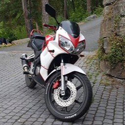

Frem til nå har alle Gutta kjørt lett MC, men i år smeller det og gutta har begynt å oppgradere til mellomtung.
Dette er våre motorsykler:
Honda CBR125R
| Specs | |
|---|---|
| Power | 14hp |
| Torque | 10.6Nm |
| Top speed | 140km/h |
| Weight | 120kg |
| Engine type | 1 cylinder, 4-stroke |
| Dicplacement | 125cc |
Yamaha YZF125R
| Specs | |
|---|---|
| Power | 15hp |
| Torque | 10Nm |
| Top speed | 133km/h |
| Weight | 135kg |
| Engine type | 1 cylinder, 4-stroke |
| Dicplacement | 125cc |
Kawazaki Z300
| Specs | |
|---|---|
| Power | 38hp |
| Torque | 22Nm |
| Top speed | 180km/h |
| Weight | 194kg |
| Engine type | 2 cylinders, 4-stroke |
| Dicplacement | 300cc |

Yamaha Virago 535
| Specs | |
|---|---|
| Power | 37hp |
| Torque | 16.4Nm |
| Top speed | 160km/h |
| Weight | 365kg |
| Engine type | 2 cylinders, 4-stroke |
| Dicplacement | 535cc |

Go Gutta AS
Besøkadresse:
Oslo 69
0121 Oslo
Postadresse:
Postboks 77 - Nordstrand
1177 Oslo
Tlf: 2103 7700
email@Gogutta.no
Org.nr: 919050942MVA